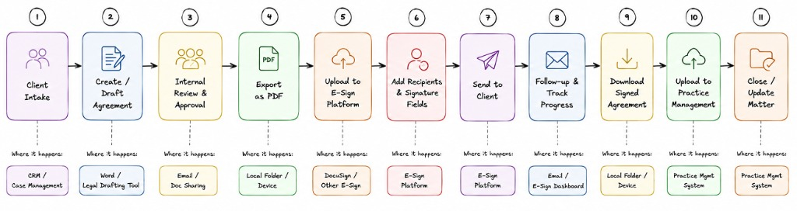
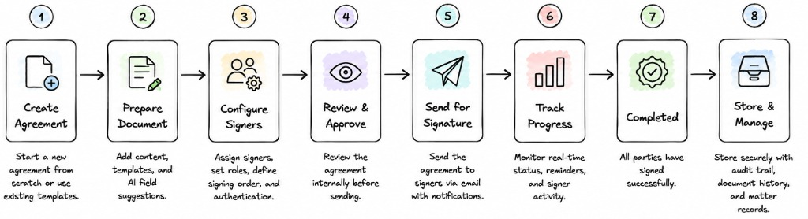
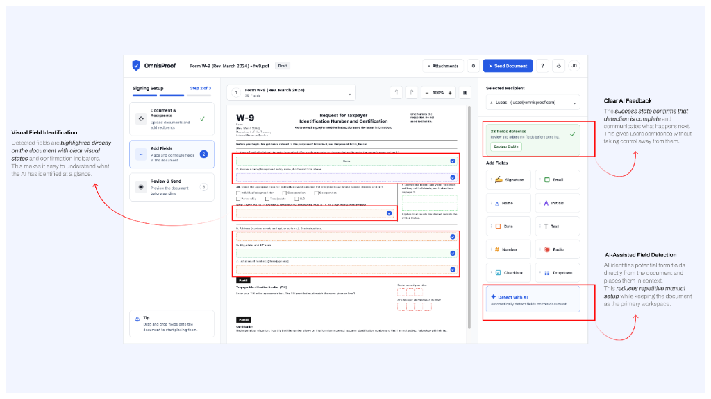
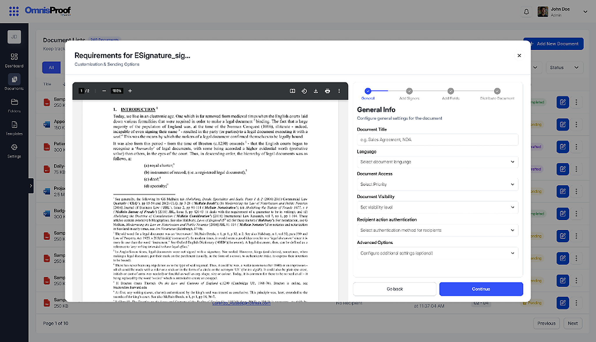
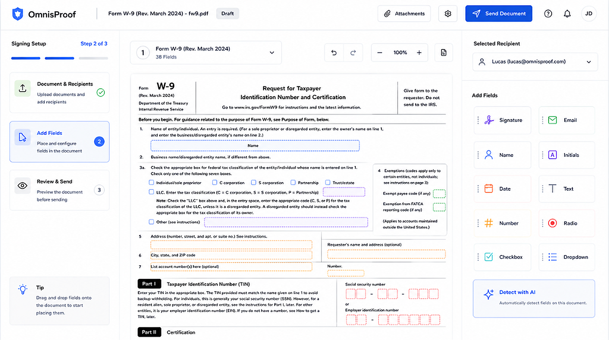

Making document signing self-serve for legal teams.
Preparing a document for signature should have been the easy part of a lawyer's day. Instead, it was a four-step modal wizard that hid the document, and a manual field-placement task that caused 100% of prep errors. Here is how I redesigned document setup in OmnisProof so the system absorbed the manual work.
Collapsing a 4-step disconnected modal wizard into 1 persistent guided workspace with reviewable AI field placement.
OmnisProof is the document execution layer inside the Omnis AI Legal Ecosystem. When lawyers prepare agreements, placing fields and assigning signers is a high-stakes, time-sensitive task where mistakes mean sending contracts to the wrong person.
By replacing manual drag-and-drop with reviewable inline AI detection and keeping the document 100% visible throughout all 3 prep stages, legal teams can now prepare and send documents in seconds without losing orientation.
Problem
- 4-step modal wizard hid the document until step 3.
- Manual field placement caused 100% of observed errors.
- Silent AI auto-placement caused complete user distrust.
Solution
- 1 guided page: document stays permanently centered.
- Inline "Detect with AI": visible, drag-and-edit placement.
- Step tracker + side panels retain full 3-stage logic.
Results
- ~72% suggestions accepted without manual adjustment.
- 1 → 0 testers distrusted AI output after redesign.
- Zero hesitation or questions in follow-up walkthroughs.
Validated via 6 internal walkthroughs (see §09)
Making AI-assisted field placement trustworthy
Manual field placement was the single biggest time sink in document prep. Automating it risked something worse than slow: wrong.
Deep Dive 02Collapsing a 4-step wizard into 1 guided page
The setup wizard hid the actual document behind four screens of configuration. I kept the logic, rebuilt the presentation.
The document execution layer inside a legal AI ecosystem.
Omnis is building an AI-powered ecosystem for legal teams: case management, drafting assistance, client collaboration, and document intelligence, all connected to the same matter data. OmnisProof is the piece that turns a drafted document into a signed, filed legal record. A firm prepares an agreement, assigns who needs to sign it, places the required fields, sends it out, and tracks it through to completion, all without leaving the platform their casework already lives in.
It sounds like the easy part of the product. Every other module in the ecosystem (drafting, matter tracking, client portals) exists to produce documents that eventually need to go through this exact step. If document execution is slow, confusing, or error-prone, it doesn't just fail on its own; it undermines the value of everything upstream of it.
Before I joined, engineering had already shipped a functional MVP: a general-purpose, multi-step setup wizard (General Info → Add Signers → Add Fields → Distribute Document) modeled after typical e-signature admin panels. It technically worked. Every required setting had a place. But it was built the way an internal admin tool gets built: optimized for covering every configuration option, not for how a lawyer actually thinks about preparing a document. The document itself didn't appear on screen until step three.
As Omnis expanded from a case-management tool into a full legal ecosystem, document execution stopped being optional: every matter now had to pass through it. Product leadership's pitch to firms was that OmnisProof could replace a separate DocuSign subscription entirely. That pitch didn't hold up if setting up a document in OmnisProof took longer and felt clumsier than DocuSign's own flow. I inherited the project at the point where that gap had become the most-cited risk in product reviews.
We didn't have time for a full research cycle. We looked at the strongest signals available.
There was no user research budget and no access to external law firms before launch. So instead of one research phase, I pulled from every signal that already existed: internal stakeholder walkthroughs with two lawyers and a paralegal on our own team, the PM's own hands-on testing notes from the MVP wizard, a structured teardown of five competitor platforms, and complaint patterns pulled from public G2 and Capterra reviews of DocuSign, PandaDoc, and Adobe Sign.
The same pattern kept showing up across every source:
- Users could technically complete each step of the wizard, but consistently lost track of which document they were configuring
- Manual field placement was the single largest source of both time spent and errors made
- Reviewers of competitor tools repeatedly described documents sent with a missing field or the wrong recipient, discovered only after the fact
This wasn't a decision based on one comment from one stakeholder. The internal walkthroughs surfaced the pattern, the PM's own testing confirmed it was reproducible, and the competitive review analysis showed it wasn't unique to our MVP: it was a category-wide failure mode nobody had solved well. That combination made it worth prioritizing over other roadmap items.
Legal teams need a way to prepare and send documents for signature that doesn't require them to become experts in field placement, or lose sight of the document itself while configuring it.
Getting a document into the system wasn't the hard part. Configuring it correctly was.
I ran a structured teardown of DocuSign, Adobe Sign, Dropbox Sign, PandaDoc, and Documenso: their public documentation, review-site screenshots, and (where available) free-tier trials.
| What competitors do well | Where they fall short |
|---|---|
| Document upload and recipient invitation are fast and well-documented across all five platforms. | Field placement is almost entirely manual: click, drag, resize, repeat, for every signature block and date field on every page. |
| DocuSign offers limited auto-placement for a narrow set of pre-formatted templates. | Outside that narrow case, nothing in the category offers reviewable AI assistance for field detection. |
| Send flows are optimized to be fast: most competitors market "send in under a minute." | That speed comes at the cost of verification. G2 review analysis surfaced a recurring complaint: documents sent with a missing field or wrong recipient, caught only after the fact. |
The key insight that shaped everything downstream: users don't struggle with getting a document into the system; they struggle with making it correct once it's there. Connecting a document, adding recipients, hitting send: that part is solved everywhere, including our own MVP. The unsolved part, in our product and every competitor's, was the space between "document is uploaded" and "document is actually ready to send": field placement, recipient assignment, and catching mistakes before they go out.
That reframed the direction of the whole project: let the system handle more of the setup, and let users review and correct only what needs their attention, rather than trying to make manual configuration marginally faster.
Mapping the fragmented baseline against the streamlined workflow


Not "redesign the interface": decide which complexity stays with the user, and which the system should absorb.
Field placement was required, but too heavy to leave fully manual
Every document needs signature, date, name, and initials fields placed correctly before it can go out. This step couldn't be removed, but making users place every field on every page by hand was the largest time cost we'd identified.
Turn field placement from a fully manual task into a system-assisted one: AI detects and proposes placement, the user reviews and corrects only where needed. → Deep Dive 01
The 4-step structure mapped to something real, but hiding the document behind it didn't
"Who's involved → what goes where → is it ready to send" is genuinely how document prep works. The problem wasn't the three-stage logic; it was presenting each stage as a separate full screen that hid the document being configured.
Keep the underlying stages, rebuild the presentation as one page: the document stays visible at all times, with a persistent step tracker and a side panel that changes per stage. → Deep Dive 02
No direct access to external users
Every decision below needed some form of validation, but law firms weren't reachable pre-launch. Relying only on internal opinion risked designing for people who already trust the product.
Validate with internal legal professionals as a proxy, cross-check against competitive review-site complaints as external signal, and label every claim by its actual confidence level rather than letting it read as more validated than it is.
The fix had to ship inside the existing timeline
The competitive gap was already being cited as a risk in product reviews. A ground-up redesign of the entire setup experience wasn't realistic in the time available.
Scope to the two moments with the clearest evidence of friction (field placement and the wizard structure) rather than trying to fix every part of document prep at once.
How do you make legal professionals trust an AI that places their signature fields?
Manual field placement meant scanning every page of a document and dropping a signature block, date field, name field, or initials block by hand, then repeating that for every recipient. In our internal walkthroughs, this step alone accounted for the largest share of total prep time, and every placement mistake we observed (missing field, field assigned to the wrong recipient) happened here. Automating it was the obvious fix. Making it trustworthy in a legal context was the actual problem: a wrong AI guess here isn't a minor bug, it's a contract sent to the wrong person.
Testing three ways to introduce AI field detection
Fully automatic, silent placement
AI detects and places every field automatically the moment a document is uploaded. No review step: the fields are just there, ready to send.
Chat-based AI assistant
A conversational interface where the user could type "place a signature field for Lucas on page 3" and the AI would execute it.
Inline, reviewable "Detect with AI"
One button inside the existing field panel. Clicking it visibly places suggested fields directly on the document, using the same drag-and-edit interaction as a manually placed field.

Designing for failure and non-standard inputs
Non-standard or custom field types that fall outside the seven types the model recognizes (signature, date, name, initials, title, email, text) aren't guessed at: they're left for manual placement using the same field library, with no error state implying something went wrong.
Scanned documents with non-selectable text can't be reliably parsed by the detection model. "Detect with AI" stays visible but shows a clear inline message explaining why detection isn't available for this file, rather than silently failing or returning wrong guesses.
A user rejects most of the AI's suggestions on one document. Nothing throttles or hides the "Detect with AI" button on the next document; every doc gets a fresh, unbiased detection pass. The risk isn't the mechanic breaking, it's a user generalizing one bad document into "the AI doesn't work here" and turning it off for good. That's a trust-recovery problem I didn't get to test with real usage, and I flag it as open below rather than claiming it's solved.
Observed walkthrough validation
Suggestions accepted without edits
Across 6 internal prototype walkthroughs. The 28% that got adjusted is exactly why every suggestion stays editable rather than final.
Standard field types reliably auto-detected
Signature, date, name, initials, and title. Email and free-text fields still default to manual placement.
Participants who distrusted AI output after the redesign
The same lawyer who moved every field under silent automation left correct suggestions untouched once placement became visible.
The signing setup was a 4-step modal wizard. I collapsed it into one page without losing control.
The MVP flow for preparing a document was General Info → Add Signers → Add Fields → Distribute Document: four separate full-screen steps layered on top of the document list as a modal. Each step had its own settings. The document being configured wasn't even visible until step three. In walkthroughs, users lost track of what they were setting up constantly, because the thing they were configuring was hidden behind the configuration itself.


Exploring layouts for progressive disclosure
Delete the steps entirely
Strip the wizard down to one dense screen: recipients, fields, document preview, and settings all visible simultaneously. Fewer screens, assumed to mean faster.
Merge General Info into Add Signers
A smaller fix: combine the first two steps into one, going from four screens to three, keeping the rest of the wizard structure intact.
Same 3-stage logic, one persistent page
Keep Document & Recipients → Add Fields → Review & Send as the underlying structure, but render it as three states of a single page: a persistent step tracker on the left, the document permanently centered, and a right-hand panel whose content changes per stage.
Replacing 4 fragmented screens with 1 persistent workspace
The entire redesign is a story of eliminating cognitive disconnect: keeping the document visible every second so users never configure blind.
- Open "Add New Document" → land on General Info modal with no document visible.
- Configure metadata (title, language, access, visibility) in isolation.
- Click Continue → navigate away to separate "Add Signers" screen.
- Click Continue → new screen: Add Fields (document finally appears on step 3).
- Click Continue → navigate away again to "Distribute Document" screen.
- Realize a signer was wrong → lose state & navigate backward through multiple screens.
- Open the document → it's the center of the screen immediately.
- Step 1 (Document & Recipients) → add recipients in side panel while preview stays visible.
- Step 2 (Add Fields) → drag fields onto document or click "Detect with AI".
- Step 3 (Review & Send) → same page, side panel swaps to final verification check.
- Change a recipient mid-flow → click step tracker without leaving page or losing state.
- Send directly → zero modal jumping or separate distribution screens required.
| Dimension | Before · 4-step wizard | After · 1 guided page |
|---|---|---|
| Document Visibility | Hidden behind modal until Step 3 | 100% visible from second zero |
| Field Placement | 100% manual drag & drop | AI detection + 1-click review |
| Navigation Friction | 4 disconnected full screens | 1 persistent page + 3 panel states |
| Error Recovery | Back-button loop across screens | Instant inline step switching |
| User Mental Model | Felt like "a cockpit" / form filling | Direct document interaction |
Handling changes and missing fields
A recipient is added after fields are already placed. Any field already assigned to a now-invalid configuration is flagged inline in the field panel rather than silently reassigned, so the user makes the call on where it belongs.
A required field type is missing when the user reaches Review & Send. The step tracker marks Step 2 with an indicator, and Send stays disabled with an inline explanation of exactly what's missing, consistent with how errors surface in the field-mapping problem above, so the two problems don't teach the user two different error patterns.
In the walkthrough that followed this redesign, the same two lawyers who'd been confused by both the original wizard and the failed single-screen attempt completed the flow without asking a single question. That's the result I trust most from this project, not because the sample is large, but because it's the same two people, the same task, before and after.
The complexity didn't disappear. It moved from the user to the system.
Document setup now handles the two heaviest parts of the old flow automatically: field placement is proposed by AI and simply reviewed rather than built from scratch, and the wizard's three stages live on one page where the document never leaves view. Users are no longer configuring blind or placing every field by hand: they're reviewing what the system already did and correcting only what needs it.
| Category | What we have |
|---|---|
| Validated | 6 internal prototype walkthroughs with lawyers and legal assistants inside our organization. Both redesigns tested against the same two participants before and after. ~72% of AI field suggestions accepted without edits. The participant who distrusted silent AI placement left correct suggestions untouched after the redesign. |
| Qualitative | "I didn't see it place them, so I don't trust them" (on the rejected silent-AI iteration). "This looks like a cockpit" (on the rejected single-screen iteration). Both quotes came from the same two-person internal test group and directly shaped the shipped design. |
| Not yet validated | Production usage data (setup completion rate, time-to-complete, support ticket volume): the feature is live but hasn't been in market long enough to generate meaningful telemetry. External law firm feedback: still untested outside our own organization. |
I want to be direct about what this case study can and can't claim. This was not long-term or external validation: the product had recently shipped, and everything above is built on internal walkthroughs and competitive analysis, not production data or outside users. If I had stayed on this longer, or once real usage accumulates, I'd want to track:
- Setup completion rate: how many started setups actually reach "sent"
- Time to complete document setup, split by AI-assisted vs. fully manual field placement
- Support requests per document setup, before and after this redesign
- AI suggestion acceptance rate at scale, not just across six sessions
- Whether external law firm users show the same "cockpit" reaction internal testers did
- You can't remove complexity, but you can decide who carries it. Field placement and the wizard's logic were both necessary: the fix in both cases was moving effort from the user to the system, not deleting the step.
- Errors aren't edge cases: they're expected. Designing for the missing field, the invalid recipient, and the unreadable document from the start made both flows more reliable than trying to patch error states in afterward.
- Visibility beats automation. The AI trust problem and the wizard problem were solved by the same underlying fix: showing the user more of what's happening, organized better, not hiding more of it in the name of simplicity.
- Test with external law firm users instead of relying only on internal proxies.
- Explore auto-detection for non-standard fields like checkboxes and custom tables.
- Run in-person sessions watching lawyers use the live product, rather than relying on internal walkthroughs alone.
- Instrument the five metrics above and revisit every claim in this case study against real production data.
Anticipated questions on these two problems.
Why only two problems instead of the whole product?
How confident are you in the 72% AI-acceptance number?
Why didn't you just delete the wizard's steps to simplify it?
What would you do differently with more time or budget?